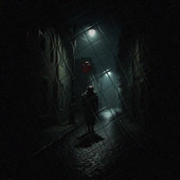
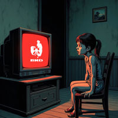
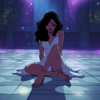
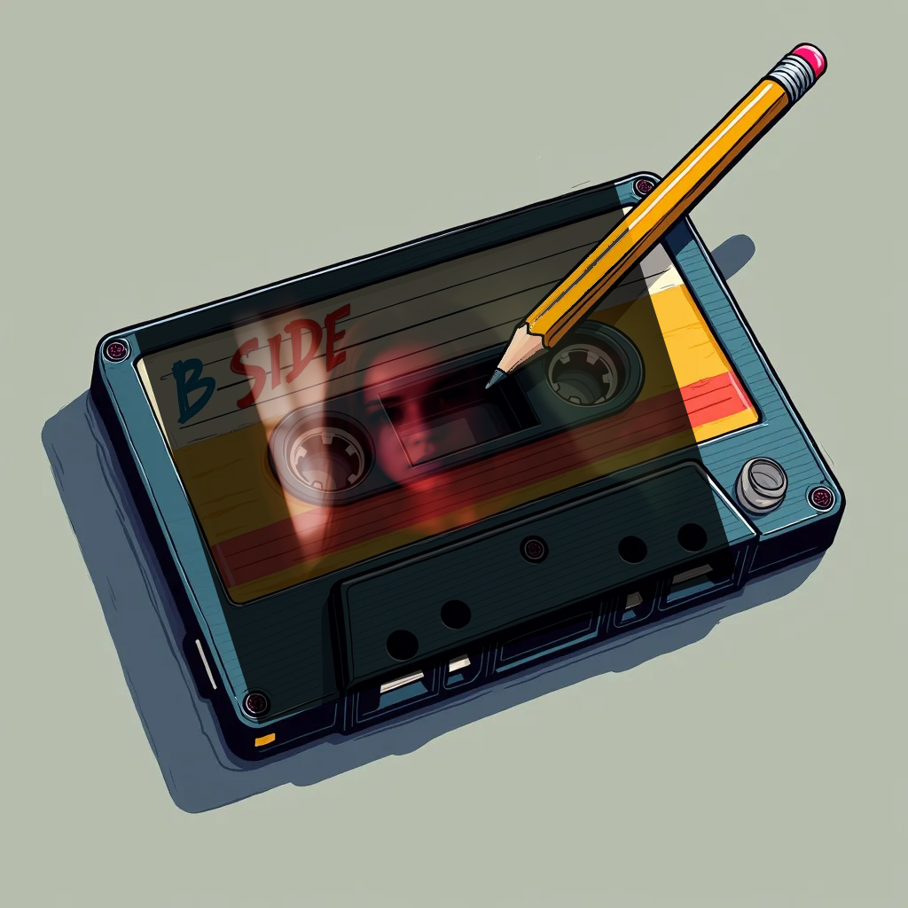
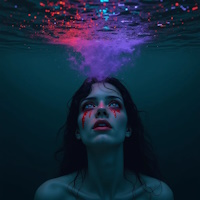
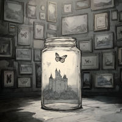

А В ад и без меня?
Исполнитель - Cristie
Начнем наше путешествие?
Привет, мой дорогой слушатель!
Спасибо тебе что нашел время на меня и мою музыку. Для меня правда очень важно что ты слушаешь и чувствуешь ее.
Сегодня мы вместе окунемся в темный мир моего альбома - В АД и без меня?
Да, у альбома 2 названия, это не ошибка, это отсылка к временам кассет, на которых была сторона А и сторона B, помнишь?)
Сторона А - короткая, это альбом - А АД и без меня, а сторона B - это полная версия альбома без ограничений, с бонус треками.
Мой текст сегодня, это буклет к этому альбому, объяснения и откровения слушателю, что я чувствовала когда создавала его, что вложила и о чем каждый трек..
Сейчас мы вместе с тобой будем качаться на волнах, мы начнем с тихой грусти, перейдем к безумию, мести и доплывем до эйфории, будет интересно.
Но сперва мы поговорим а о чем вообще этот альбом?
Он о чувствах, он о внутренней борьбе, свободе, перерождении, грусти, разочаровании и одиночестве..
Знакомо правда?
Ты наверное думаешь, а вложила ли я себя? Или это просто строки?
Разумеется да, вся боль в моих текстах это моя боль, это то как я чувствую и что я хочу донести миру, до тебя, до твоего сердца.
Ну что, начнем наше путешествие?
1. Sad demon, он же Мой демон
 Первый трек, Sad demon, он же Мой демон.
Это один из самых сильных для меня треков, он бьёт по моей душе так сильно, что по ночам я просыпаюсь от кошмаров с флешбэками.
Это история чувств ребенка, который любил несмотря ни на что, старался, терпел, искал причины в себе, но так и не смог справится с грузом вины. Вины, которая стала болью, ненавистью, движущей силой, которая в итоге полностью изменила меня. Мне было больно годами, но эта боль сделала меня. Она меня отрезала от старого мира и привела в новый, который я строю сама. Это больно, но необходимо.
Этот трек, посыл что любую боль ты в силе преодолеть, ты можешь переродиться, но ещё он напоминает о том что нужно любить своих детей.
У меня ушли годы чтобы снова собрать все кусочки разбитой картины и теперь моя душа похожа на склеенный разбитый витраж в котором некоторых кусков не будет никогда.
Первый трек, Sad demon, он же Мой демон.
Это один из самых сильных для меня треков, он бьёт по моей душе так сильно, что по ночам я просыпаюсь от кошмаров с флешбэками.
Это история чувств ребенка, который любил несмотря ни на что, старался, терпел, искал причины в себе, но так и не смог справится с грузом вины. Вины, которая стала болью, ненавистью, движущей силой, которая в итоге полностью изменила меня. Мне было больно годами, но эта боль сделала меня. Она меня отрезала от старого мира и привела в новый, который я строю сама. Это больно, но необходимо.
Этот трек, посыл что любую боль ты в силе преодолеть, ты можешь переродиться, но ещё он напоминает о том что нужно любить своих детей.
У меня ушли годы чтобы снова собрать все кусочки разбитой картины и теперь моя душа похожа на склеенный разбитый витраж в котором некоторых кусков не будет никогда.
2. Маска Фантазма
 Грустно, правда?
Давай немного отдохнем в нашей поездке?
Второй трек, Маска Фантазма или Phantasm. В детстве я любила мультики про супергероев, Дисней мне не зашёл. Но я всегда не могла понять, почему большая часть женских супергероев такая отстойная? Чудо женщина, супергёрл? Но потом, я посмотрела мультфильм, который для меня навсегда стал самым любимым. Это Бэтмен Маска Фантазма. Мой трек посвящен главной героине - Андреи Бомонт, она же скрывается под маской Фантазма, сильного, смелого персонажа, которым движет месть. История сломанной любви, сильными героями и тоской в конце. Я люблю такое. Я надеюсь я смогла передать атмосферу этого шедевра в своем треке. У него кстати есть продолжение, да, эта история не заканчивается, скоро вы ее услышите, или уже услышали)
В любом случае, Андреа навсегда в моем сердце.
Грустно, правда?
Давай немного отдохнем в нашей поездке?
Второй трек, Маска Фантазма или Phantasm. В детстве я любила мультики про супергероев, Дисней мне не зашёл. Но я всегда не могла понять, почему большая часть женских супергероев такая отстойная? Чудо женщина, супергёрл? Но потом, я посмотрела мультфильм, который для меня навсегда стал самым любимым. Это Бэтмен Маска Фантазма. Мой трек посвящен главной героине - Андреи Бомонт, она же скрывается под маской Фантазма, сильного, смелого персонажа, которым движет месть. История сломанной любви, сильными героями и тоской в конце. Я люблю такое. Я надеюсь я смогла передать атмосферу этого шедевра в своем треке. У него кстати есть продолжение, да, эта история не заканчивается, скоро вы ее услышите, или уже услышали)
В любом случае, Андреа навсегда в моем сердце.
3. Пеннивайз

Ну что, отдохнул? Дальше мы шагнем в безумие. Я думаю ты уже заметил, что я люблю качели и мои треки очень разные, там есть грусть, тоска, ирония, треш, угар, юмор, безумие. Я просто люблю разное и не могу придерживаться одного стиля и направления, я разная и моя музыка тоже.
Пеннивайз, это трек представитель треша в моей голове. Я люблю хорроры, я люблю представлять себя на месте главных героев, маньяков, мне всегда интересно - а что у них в голове? Что им движет? Почему он стал таким?
Пеннивайз это экспериментальный трек, каждый раз, я думаю что лучше у меня не получится, что темнее и жёстче уже никак, а потом оп! И получается Оно.
Я люблю творчество Кинга, хоть и не все, но эту книгу определенно люблю, а как ты уже заметил, я люблю посвящать треки любимым произведениям..
А ещё я люблю тот мрак с которым он получился, после его прослушивания, я хочу перечитать книгу..
4. Спокойной ночи трупики!

Ну что, теперь перейдем к веселью? Как насчёт иронии и черного юмора?
Да, мы поговорим про - Спокойной ночи трупики! Один из моих любимых треков!
Как он вообще получился? Я обожаю мемы! Люблю черный юмор и мне реально нравились старые сериалы, теже улицы разбитых фонарей! Ну как можно не любить Дукалиса? А их танец?
А мемные фразы с ними?
Песня посвящена ребенку 90х, который жил в обстановке безумия и хаоса, но любил мультики. Но ведь тогда чего только не показывали? Ребенок мог смотреть любые программы, я реально помню как было интересно смотреть Криминальную Россию, там же ВЗРОСЛЫХ показывают! Что-то серьезное! Интересно! Трупы! Криминал!
Тогда родителям было не до того что их чадо смотрит, смотрит и ладно, главное занят. Этот трек смесь мемов и духа того времени. Честно, я не люблю когда 90е вспоминают вайбом соток, жвачки турбо и ТД и ностальгируют. Не хотела бы я вернуться в то время, сейчас намного лучше.. Но, получилось неплохо, я люблю этот трек, он, как и логотоп ВИД спонсор моей поломанной психики!
5. Круги (Circles)
 Не заскучал? Идём дальше.
Круги (Circles), на удивление самая популярная песня альбома. Мне она нравится, но она получилась случайно.
Я постоянно о чем то думаю, размышляю и иногда записываю свои рассуждения. Иногда я не могу уснуть и много думаю о вечном, смысле жизни, зачем я вообще существую? Кто я вообще? Эти мысли идут по кругу. В одну из таких ночей я решила склеить свои мысли в строки и текст мне понравился, хотя я считаю что он не идеален, и наверное даже скажу что проходной.. У меня был подходящий семпл, я попробовала напеть и что-то получилось. Я решила что доведу начатое до конца, хоть это и не самая однозначная моя композиция. Но знаешь, мне понравилось, мне нравится какой в нее получилось заложить смысл, несмотря на ее простоту. И да, меня греет мысль что когда то из меня вырастет дерево, отдам дань природе..
Не заскучал? Идём дальше.
Круги (Circles), на удивление самая популярная песня альбома. Мне она нравится, но она получилась случайно.
Я постоянно о чем то думаю, размышляю и иногда записываю свои рассуждения. Иногда я не могу уснуть и много думаю о вечном, смысле жизни, зачем я вообще существую? Кто я вообще? Эти мысли идут по кругу. В одну из таких ночей я решила склеить свои мысли в строки и текст мне понравился, хотя я считаю что он не идеален, и наверное даже скажу что проходной.. У меня был подходящий семпл, я попробовала напеть и что-то получилось. Я решила что доведу начатое до конца, хоть это и не самая однозначная моя композиция. Но знаешь, мне понравилось, мне нравится какой в нее получилось заложить смысл, несмотря на ее простоту. И да, меня греет мысль что когда то из меня вырастет дерево, отдам дань природе..
6. Тень
 Тень. Сложная песня, честно. Очень личная. Была написана в период депрессии, тогда мне только назначили антидепрессанты, тогда в моей жизни наступил тупик, все потухло, я выгорела.
Знаешь, все в твоей жизни объективно хорошо, тебя любят, многие скажут что грустить не о чем, ты чего? А у меня была пустота. Просто внутри ничего. Мне хотелось просто уснуть и больше не проснутся, ведь зачем? Что я чувствую? Ничего. Понимала что проснутся просто надо, ради других, но не себя. Мне не было себя жалко, скорее мне было грустно что другие страдают из-за меня, моей пустоты, я была реально как робот, кукла без чувств. Смысла просто не было. Вставать было сложно, но я смогла. Именно в этом состоянии были написаны эти строки, а сам трек записан только через год, у меня не было желания его делать, а текст был написан чтобы разобраться что со мной и что я чувствую. Сейчас со мной все хорошо, этот период позади, но я буду помнить его всегда, чтобы снова не провалится в эту пустоту.
Тень. Сложная песня, честно. Очень личная. Была написана в период депрессии, тогда мне только назначили антидепрессанты, тогда в моей жизни наступил тупик, все потухло, я выгорела.
Знаешь, все в твоей жизни объективно хорошо, тебя любят, многие скажут что грустить не о чем, ты чего? А у меня была пустота. Просто внутри ничего. Мне хотелось просто уснуть и больше не проснутся, ведь зачем? Что я чувствую? Ничего. Понимала что проснутся просто надо, ради других, но не себя. Мне не было себя жалко, скорее мне было грустно что другие страдают из-за меня, моей пустоты, я была реально как робот, кукла без чувств. Смысла просто не было. Вставать было сложно, но я смогла. Именно в этом состоянии были написаны эти строки, а сам трек записан только через год, у меня не было желания его делать, а текст был написан чтобы разобраться что со мной и что я чувствую. Сейчас со мной все хорошо, этот период позади, но я буду помнить его всегда, чтобы снова не провалится в эту пустоту.
7. Demon inside или Мой демон
 Опять грусть. Но мы ещё немного погрустим. Следующий трек Demon inside или Мой демон.
Этот трек можно назвать сиквелом трека Sad Demon, но он про другое. Он про людей их чувства и личные травмы, которые мы как чемодан тащим за собой.
Он про самопожертвование ради других и про последствия действий которые мы не можем изменить, про выбор который порой делаем не мы, а наши травмы. Иногда они направляют нас и делают выбор, а не мы. В песне героиня разрывается в выборе, причинить боль или пожертвовать собой? Принять демона в себе или просто уйти, ведь когда тебе все равно - проще.
А ещё это отсылка к треку human rag'n'bone, мне он нравится, но не в оригинале, однажды я слышала живое выступление уличной музыкантки и оно было намного лучше, жаль у меня не хватило смелости познакомится. Больше этот вариант я никогда не слышала и не смогла найти.
Эта песня про внутреннюю борьбу и противоречия, про выбор, брать с собой чемодан или может пора разобраться что за вещи ты таскаешь с собой?
Опять грусть. Но мы ещё немного погрустим. Следующий трек Demon inside или Мой демон.
Этот трек можно назвать сиквелом трека Sad Demon, но он про другое. Он про людей их чувства и личные травмы, которые мы как чемодан тащим за собой.
Он про самопожертвование ради других и про последствия действий которые мы не можем изменить, про выбор который порой делаем не мы, а наши травмы. Иногда они направляют нас и делают выбор, а не мы. В песне героиня разрывается в выборе, причинить боль или пожертвовать собой? Принять демона в себе или просто уйти, ведь когда тебе все равно - проще.
А ещё это отсылка к треку human rag'n'bone, мне он нравится, но не в оригинале, однажды я слышала живое выступление уличной музыкантки и оно было намного лучше, жаль у меня не хватило смелости познакомится. Больше этот вариант я никогда не слышала и не смогла найти.
Эта песня про внутреннюю борьбу и противоречия, про выбор, брать с собой чемодан или может пора разобраться что за вещи ты таскаешь с собой?
8. Балтика Play Квин
 Все, хватит грустить, перерыв.
Балтика Play Квин. Очень люблю эту песню. Она лёгкая, веселая, ироничная, с отсылками.
Я люблю игры! Реально, наигранных часов у меня много! В играх я люблю разное, от morrowind, Mafia, silent hill, NFS underground, mass effect, dead space, postal 2 , vampire: the masquerade bloodlines это только часть.
Пиво я тоже люблю, но разное, по настроению. Ну и пирожки и сосиски в тесте - моя любовь однозначно!
Так что эта песня ироничная калька с меня с упором на юмор и иронию.
Все, хватит грустить, перерыв.
Балтика Play Квин. Очень люблю эту песню. Она лёгкая, веселая, ироничная, с отсылками.
Я люблю игры! Реально, наигранных часов у меня много! В играх я люблю разное, от morrowind, Mafia, silent hill, NFS underground, mass effect, dead space, postal 2 , vampire: the masquerade bloodlines это только часть.
Пиво я тоже люблю, но разное, по настроению. Ну и пирожки и сосиски в тесте - моя любовь однозначно!
Так что эта песня ироничная калька с меня с упором на юмор и иронию.
9. Careless или Беспечный

Этот трек моя дань уважения Фредди Меркьюри. Я люблю Queen, и песню careless whisper. Мне хотелось сделать трек по мотивам, передать этот вайб в своем стиле, на разных языках. У этой песни две версии, я не смогла выбрать какая лучше и оставила обе. Мне кажется у меня неплохо получилось.
10. Эйфория (Love Euphoria)
 Эх, опять грусть. Эйфория. Она самая.
Песня была написана на эмоциях в период когда у моих друзей начали распадаться семьи, по разным причинам. Знаете, у меня триггер на такое, на разводы, измены. Мне было тяжело понять почему мужчины изменяют, оставляют детей в их сложный период одних, ведь я сама прошла через такое, я помню как плохо быть ребенком которого делят, и каждый пытается доказать что он прав, а другой твой враг. Разводов было много, один за другим, ситуации похожие. Ещё ситуацию усугубили соцсети в которых я читала подобные истории, это все вызывало бурю эмоций.
Поэтому трек эйфория, это про эмоции, не мои, а всех тех от кого ушли, бросили. То как я это почувствовала и как это передала. Но помни, любая боль проходит, очередная волна может стать последней и наступит гладь.
Эх, опять грусть. Эйфория. Она самая.
Песня была написана на эмоциях в период когда у моих друзей начали распадаться семьи, по разным причинам. Знаете, у меня триггер на такое, на разводы, измены. Мне было тяжело понять почему мужчины изменяют, оставляют детей в их сложный период одних, ведь я сама прошла через такое, я помню как плохо быть ребенком которого делят, и каждый пытается доказать что он прав, а другой твой враг. Разводов было много, один за другим, ситуации похожие. Ещё ситуацию усугубили соцсети в которых я читала подобные истории, это все вызывало бурю эмоций.
Поэтому трек эйфория, это про эмоции, не мои, а всех тех от кого ушли, бросили. То как я это почувствовала и как это передала. Но помни, любая боль проходит, очередная волна может стать последней и наступит гладь.
Сторона B

Фух! Мы прошли по первой части альбома, части А, но впереди еще часть B.
Готов? Не устал? Налей чаю и приготовься, осталось немного..
11. Sad demon (альтернативная версия)
Сторона B начинается с альтернативной версии Sad demon.
Она получилась случайно, это был эксперимент, ее альтернативное видение.
Мне стало интересно, а можно эту боль передать с другим оттенком?
В итоге я оставила ее, надеюсь тебе она нравится..
12. Careless (альтернативная версия)
 Также на стороне B есть альтернативная версия Careless.
Да, я снова не смогла выбрать лучший вариант и оставила оба)
Также на стороне B есть альтернативная версия Careless.
Да, я снова не смогла выбрать лучший вариант и оставила оба)
Covers
Дальше у нас идут каверы, давай расскажу про каждый, почему выбрала именно их?
13. Elements (Riverline Cover)
 Elements. Песня незаслуженно малоизвестной группы Riverline.
Когда я первый раз их услышала, я офигела насколько похоже на Linkin park!
Даже не по вокалу, нет, тут дело не в нем, а по духу!
У ребят очень круто получилось! Мой кавер дань уважения их проекту и их идее посвятить альбом Linkin park
Elements. Песня незаслуженно малоизвестной группы Riverline.
Когда я первый раз их услышала, я офигела насколько похоже на Linkin park!
Даже не по вокалу, нет, тут дело не в нем, а по духу!
У ребят очень круто получилось! Мой кавер дань уважения их проекту и их идее посвятить альбом Linkin park
14. Numb (Linkin park Cover)
 Numb. Ну что тут можно добавить?
Linkin park мои вдохновители, как можно не любить Честера, его вокал, тексты и его боль?
Я считаю их творчество это двигатель, который в свое время дал мне пинок к музыке!
И я могу переслушивать их бесконечно. Но, мне очень нравится текст этой песни переведенный AI MORI, а т.к мой любимый язык Русский, я не могла спеть по другому.
В этой версии есть пасхалка, там два моих вокала, да, я даже близко не Честер, но моя попытка мне нравится.
Numb. Ну что тут можно добавить?
Linkin park мои вдохновители, как можно не любить Честера, его вокал, тексты и его боль?
Я считаю их творчество это двигатель, который в свое время дал мне пинок к музыке!
И я могу переслушивать их бесконечно. Но, мне очень нравится текст этой песни переведенный AI MORI, а т.к мой любимый язык Русский, я не могла спеть по другому.
В этой версии есть пасхалка, там два моих вокала, да, я даже близко не Честер, но моя попытка мне нравится.
15. Parasite (Banshee Cover)
 Parasite. Я считаю Banshee дико недооценена!
Просто послушайте как она орет! Это великолепно!
Да, текст простой, но блин глубокий!
Мне нравится в этом треке совмещение физической боли и душевных страданий, как ты теряешь свою личность!
Гнев, боль, утрата, безнадега. Однозначно мой вайб.
Parasite. Я считаю Banshee дико недооценена!
Просто послушайте как она орет! Это великолепно!
Да, текст простой, но блин глубокий!
Мне нравится в этом треке совмещение физической боли и душевных страданий, как ты теряешь свою личность!
Гнев, боль, утрата, безнадега. Однозначно мой вайб.
16. Crash (DeathbyRomy Cover)

Crash. DeathbyRomy однозначно крута!
Не только по музыке, визуалу и текстам.
Все что она делает пропитано болью и страданиями - никаких хэппиэндов!
По мне так идеально.
В этом треке мне нравится атмосфера. Авария, вода, неизбежность, принятие, наслаждение, кульминация.
Это просто красиво. И да, я добавила немного себя, пропев на Русском и Японском.
17. Коллекционер (Deadушки Cover)

Коллекционер. Deadушки и их OST к игре ядерный титбит, кто помнит тот знает!
А кто не знает, пожалуйста не гуглите! Не ломайте себе психику!
Хотя, если вы уже здесь, думаю отговаривать нет смысла)
Что тут сказать, у песни очень глубокий текст, для меня это самое главное!
О чем он? Трудно сказать, про бабочку или нет?
Я уверена что каждый найдет в нем что-то свое.
Благодарность за прослушивание
Большое спасибо что дочитал и погрузился со мной в мой поток мыслей. Я очень благодарна тебе за прослушивание. Ваши отзывы на мои треки - самая большая благодарность. Спасибо тебе! Я очень надеюсь что моя музыка помогла тебе, я не знаю какие ты испытал эмоции, но возможно мы были на одной волне. Знаешь музыка помогает, надеюсь я помогла тебе, вам всем. Что будет дальше? Поверь, будет интересно, прямо сейчас я готовлю новый материал! А чтобы не скучать, ты всегда можешь слушать меня тут, там всегда все самое новое.